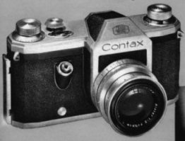
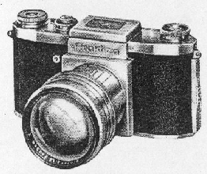

-Introduction
The heritage of the Praktica cameras is divided between the Zeiss Ikon Contax S, and the KW Praktica. After the war ZEISS IKON was divided between East and West Germany. While West German Zeiss Ikon continued the production of rangefinder Contax cameras, Zeiss Ikon Dresden introduced the first camera with a built-in pentaprism. It used the M42 lens mount, that was being developed by KW for the Praktica.
The 1949 Contax S. The first SLR with a built-in Pentaprism. Note the shutter release in the front of the camera body, a feature used in Prakticas until 1989.
-Contax/Pentacon Cameras (until 1959)
Contax S type Cameras
| Model | Comments | Year |
| Contax S | The original Contax S. The ancestor of the modern day 35mm SLRs. | 1949 |
| Contax D | Labeled Contax but with a "D"(Dresden) under the Zeiss Ikon symbol. Flash sync socket moved to the top of the camera. Shutter less noisy. | 1954 |
| Contax D | Labeled Contax D with "VEB" under the Zeiss Ikon symbol. | 1952 |
| Contax E | Contax D with built-in meter. | 1955 |
| Contax F | Pentacon symbol instead of Zeiss Ikon. Automatic diaphragm (using same system as the Praktica FX2). | 1958 |
Pentacon Cameras
| Model | Comments | Year |
| Pentacon F | The same has Contax F. Automatic diaphragm. | 1959 |
| Pentacon FM | The same as Pentacon F, with split image rangefinder. Automatic diaphragm. | 1959 |
| Pentacon FB | Same as Contax E. Automatic diaphragm. | 1959 |
In 1959 Zeiss Ikon Dresden was merged with four other Dresden camera factories, in the VEB Kamera und Kinowerk Dresden. One of those companies was KW that for years produced some excellent cameras: the Praktisix, the Praktinas and the Prakticas.
-KW/Praktica cameras (until 1959)
KW (Kamera-Werkstätten Guthe & Thorsch Dresden) was founded in 1919, in 1937 it was bought by the Charles A. Noble of Detroit USA. In 1939 KW introduced the Praktiflex, sharing with the Kine-Exakta the title of being the first 35mm single lens reflex camera.
Praktiflex
| Manufacturer | Model | Comments | Year |
| KW | Praktiflex | One of the first SLR cameras. First to use a prism (removable). 40mm screw mount lenses. | 1939 |
In 1949 the Praktiflex was improved, and called Praktica. It used, for the first time, and in conjunction with the Contax S, the M42x1 lens mount.
 The original Praktica.
Praktica series
| Manufacturer | Model | Comments | Year |
| KW | Praktica | SLR camera, optional Pentaprism (rare). The first to use M42 lens mount. The first to use the name "Praktica". Together with the Contax S, it is the ancestor of all Prakticas to come. | 1949 |
| KW | Praktica FX | The same as the Praktica. Addition of flash sync in most models. Many versions were made. Later models had an improved design viewfinder, similar to one of the FX2. | 1951 |
| KW | Praktica FX2 | The first camera in the world to use automatic diaphragm, the diaphragm was set to the working aperture when the shutter was released. Improved viewfinder. | 1956 |
| KW | Praktica FX3 | Same as FX2(?) | 1956 |
As the original Praktica model began ageing, KW developed a top of
the line camera the Praktina.
The Praktina was a competitor to the more
advanced cameras from Exakta and Pentacon/Zeiss Ikon. It had many
accessories like an auto winder and a film back, it was a "scientific"
camera opposed to the "amateur" status of the Praktica. Unlike the
Praktica it was sold with a Pentaprism.
It used a bayonet lens mount,
this mount prevented the Praktina from being as popular as the Prakticas,
as few manufacturers produced lenses to the Praktina.
Praktina series
| Manufacturer | Model | Comments | Year |
| KW | Praktina FX | Top of the line camera. Removable Pentaprism. Breech lock lens mount. One model was made with a built-in meter. | 1956 |
| Pentacon/KW | Praktina IIa | Improved Praktina FX. | 1959 |
In 1959 KW updated their range of Praktica cameras. The Praktica design was becoming old, so KW incorporated a built-in pentaprism, and a winder lever. The Praktica IV was born. But that was not enough, Japanese competition was growing. So in 1959 KW was merged with Zeiss Ikon Dresden, the new company was called Pentacon.
Praktica IV
| Manufacturer | Model | Comments | Year |
| KW/Pentacon | Praktica IV | Classic Praktica body design with built-in pentaprism. | 1959 |
Praktica/Pentacon cameras (after 1959)
After the unification of KW and Zeiss Ikon. The East German camera production was reorganized. The Praktina range was progressively phased out. The Praktica range was once again improved. The Pentacon Super would become the top of the line camera. Among the East German camera manufacturers only Exakta continued, for now, independent.
Praktica IV series
| Manufacturer | Model | Comments | Year |
| Pentacon | Praktica IV M | Split Image Rangefinder. Pentacon version of the Pentacon IV. | 1961 |
| Pentacon | Praktica IV B | Built-in meter. | 1961 |
| Pentacon | Praktica IV BM | Split Image Rangefinder. Built-in meter. | 1961 |
| Pentacon | Praktica IV F | Ground glass focusing, Split Image Rangefinder | 1962 |
| Pentacon | Praktica IV FB | Ground glass focusing, Split Image Rangefinder. Built-in meter. | 1963 |
In 1964 pentacon produced another first, the rapid return mirror. This feature was again, adapted to the same Praktica body design.
Praktica V series
| Manufacturer | Model | Comments | Year |
| Pentacon | Praktica V | Split Image Rangefinder. Built-in Pentaprism. First SLR in the world to have a rapid return mirror. | 1964 |
| Pentacon | Praktica VF | The same as Praktica V with ground glass focusing. | 1964 |
| Pentacon | Praktica V BM | Praktica VF with built-in meter. | 1964 |
In 1965 after many years of production, the Praktica design was
changed.
A new model, the Praktica Nova (New) appeared, it had
features reflecting the heritage of Pentacon. The camera had the
traditional Zeiss Ikon Dresden angled shutter release. But it maintained
the shutter mechanism of the KW Prakticas, to be replaced in the Praktica
mat.
But innovation didn't stop there, at the same time Pentacon
launched the Praktica mat, the first European camera with TTL metering.
In 1966, another first, the Praktica Electronic, was the first
camera with an electronic controlled shutter.. The design of shutter was
very similar to the one used many years later in the Praktica B200. The
Praktica electronic never entered production. Overall, the new
cameras were smaller, had a better finish and the winder lever was placed
in the top of the camera.
Praktica Nova series
| Manufacturer | Model | Comments | Year |
| Pentacon | Praktica Nova | Completly new design. Only the shutter mechanism was mantained. | 1965 |
| Pentacon | Praktica Nova B | Praktica Nova with meter. | 1965 |
| Pentacon | Praktica mat | The first European camera with TTL metering. | 1965 |
| entacon | Praktica Electronic | The first camera in the world with an electronic shutter. Never entered production. | 1966 |
| Pentacon | Praktica Nova I | Praktica Nova, with new shutter mecahnism. | 1967 |
| Pentacon | Praktica Nova IB | Praktica Nova I with built-in meter. | 1967 |
| Pentacon | Pentaflex SL | Budget version of Praktica Nova I. Prism housed in a plastic(?) cover. It didn't have the Praktica name on it. | 1967 |
| Pentacon | Praktica Super TL | Simplified version of Praktica mat. | 1968 |
Note1: The Praktica Nova line of cameras, was sold in the USA by HANIMEX.
Note2: There were also the Praktica Super TL2,TL3,TL500 and TL1000, they were produced until 1981,they were L series cameras supplied OEM.
In 1966 Pentacon launched is top of the line camera, the Pentacon Super.
It replaced the Praktina range of cameras, it had bulk film backs motor drive and other accessories of a profissional camera.
It used a special kind of M42x1 lenses with two pins, to transfer aperture information to the camera. It was one of the first cameras to have aperture information in the viewfinder.
It used the shutter that would later be used in the L series Prakticas.
Pentacon Super
| Manufacturer | Model | Comments | Year |
| Pentacon | Pentacon Super | Top of the line camera. Removable Pentaprism. | 1966 |
In 1969 the Ihagee Kamerawerk, was being integrated in the
Pentacon Kombinat.
Their cameras were too expensive to manufacture,
and it was suffering from Japanese competition.
So a camera was
jointly developed by Ihagee and Pentacon. It used the efficient
manufacturing techniques, which were being developed for the Praktica L
series of cameras. The shutter was the one of the Pentacon Super; the lens
mount was the traditional Exakta mount. Exakta enthusiasts have a little
"disdain", for the Exakta RTL1000 so it must have a space in this page.
Exakta RTL1000
| Manufacturer | Model | Comments | Year |
| Ihagee/Pentacon | Exakta RTL1000 | One of the last 35mm Exaktas. Ancestor of the Praktica VLC. | 1969 |
In 1970 the VEB Pentacon, launched the Praktica L. The Praktica L was the first of a line of cameras that were made, until German reunification. The biggest innovation, from previous Praktica cameras, was the excellent vertical focal-plane shutter. The Praktica L shutter was first used in the Pentacon Super and in the Exakta RTL1000. The reason why there are still so many screw mount Prakticas in use is this excellent piece of engineering.
L Type Cameras
| Model | Meter | Electric Lenses | Comments | Year |
| Praktica L | No | No | The basic model no meter | 1970 |
| Praktica LLC | TTL | Yes | TTL metering. Full aperture metering with electric lenses. | 1971 |
| Praktica LTL | TTL | No | TTL metering. Step down metering | 1972 |
| Praktica LB | Non TTL | No | Uncoupled, non TTL meter | 1972 |
| Praktica VLC | TTL | Yes | LLC with removable viewfinder. Viewfinder compatible with Exakta RTL1000 | 1974 |
| Praktica L2 | No | No | Improved Praktica L. Multi Coated lenses. | 1975 |
| Praktica LTL2 | TTL | No | Improved Praktica LTL. Multi Coated lenses. | 1975 |
| Praktica PLC2 | TTL | Yes | Improved Praktica LLC. Multi Coated lenses | 1975 |
| Praktica VLC2 | TTL | Yes | Improved Praktica VLC. Multi Coated lenses. | 1975 |
| Praktica EE2 | TTL | Yes | Aperture priority with electric lenses. Top of the line camera. | 1977 |
| Praktica MTL3 | TTL | No | Third generation LTL | 1978 |
| Praktica PLC3 | TTL | Yes | Third generation LLC | 1978 |
| Praktica VLC3 | TTL | Yes | Third generation VLC | 1978 |
| Praktica EE3 | TTL | Yes | Same as EE2.Aperture priority with electric lenses. | 1978 |
| Praktica MTL5 | TTL | No | Fourth(?) generation LTL | 1983 |
| Praktica MTL5b | TTL | No | Fifth(?) generation LTL | 1985 |
| Praktica MTL50 | TTL | No | Led information in the viewfinder. Otherwise the same as the MTL5b. The last of the screw mount Prakticas | 1985 |
Note1: There were several OEM L series Prakticas, sold mainly in the UK, such as the STL3 and the TL3.
Note2: All Praktica L cameras could use both the electric and non-electric lenses.
| Design | Type | Focal length | f-stop | Electric | Ø | Weight |
| Zeiss | Flektogon | 20 | 4 | N | 77mm | ? |
| Zeiss | Flektogon | 20 | 2.8 | Y | 67mm | 350g |
| Pentacon Meyer | - | 29 | 2.8 | Y | 55mm | 240g |
| Pentacon/Meyer | - | 30 | 3.5 | N | 49mm | 175g |
| Zeiss | Flektogon | 35 | 2.4 | Y | 49mm | 250g |
| Pentacon/Meyer | Oreston | 50 | 1.8 | Y | 49mm | 250g |
| Zeiss | Pancolar | 50 | 1.8 | Y | 49mm | 225g |
| Zeiss | Tessar | 50 | 2.8 | N | 49mm | 175g |
| Zeiss | Pancolar | 80 | 1.8 | Y | 58mm | 310g |
| Pentacon/Meyer | - | 135 | 2.8 | Y | 55mm | 470g |
| Zeiss | Sonnar | 135 | 3.5 | Y | 49mm | 430g |
| Zeiss | Olympia Sonnar | 180 | 2.8 | Y | 86mm | 1.365Kg |
| Pentacon/Meyer | - | 200 | 4 | Y | 58mm | 670g |
| Zeiss | Sonnar | 200 | 2.8 | Y | 77mm | 1.2Kg |
| Zeiss | Sonnar | 300 | 4 | Y | 86mm | 2.08Kg |
| Zeiss | - | 1000 | 5.6 | N | - | 12Kg |
Note: It's almost impossible to make an accurate list of the lenses made in East Germany for Contax S/Pentacon/Praktica cameras. The lenses were upgraded over the years, so you can find the same lens with different finishes. Besides that the lenses were made with different features, such as electric mounts and 2 pin mounts to transfer aperture information to the camera. There were multi coated and non multi coated versions of the same lens.